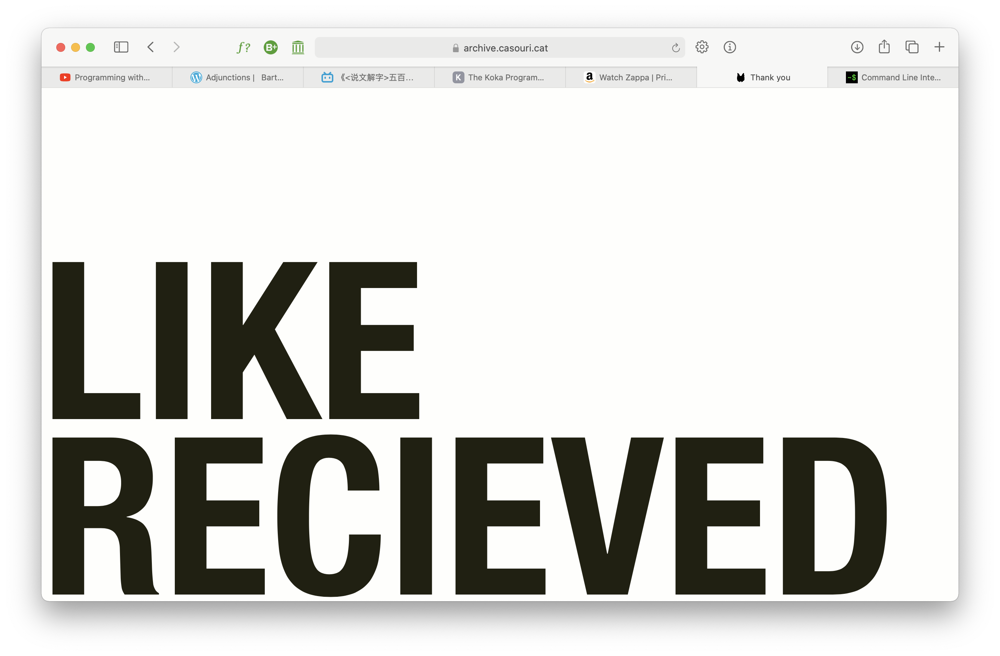
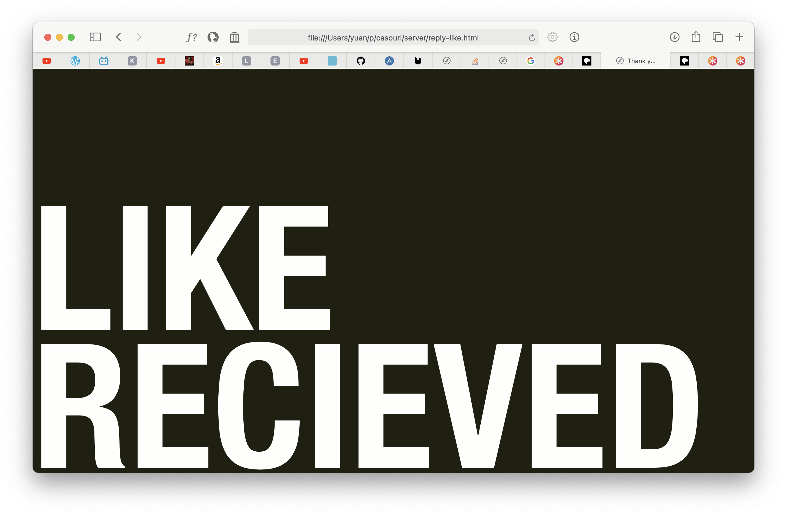
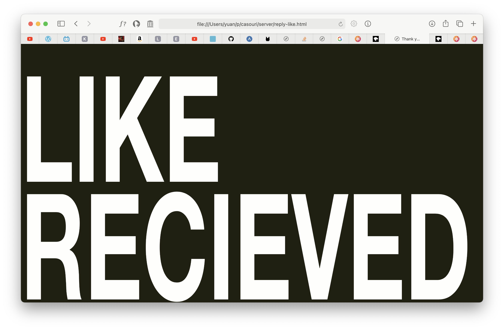
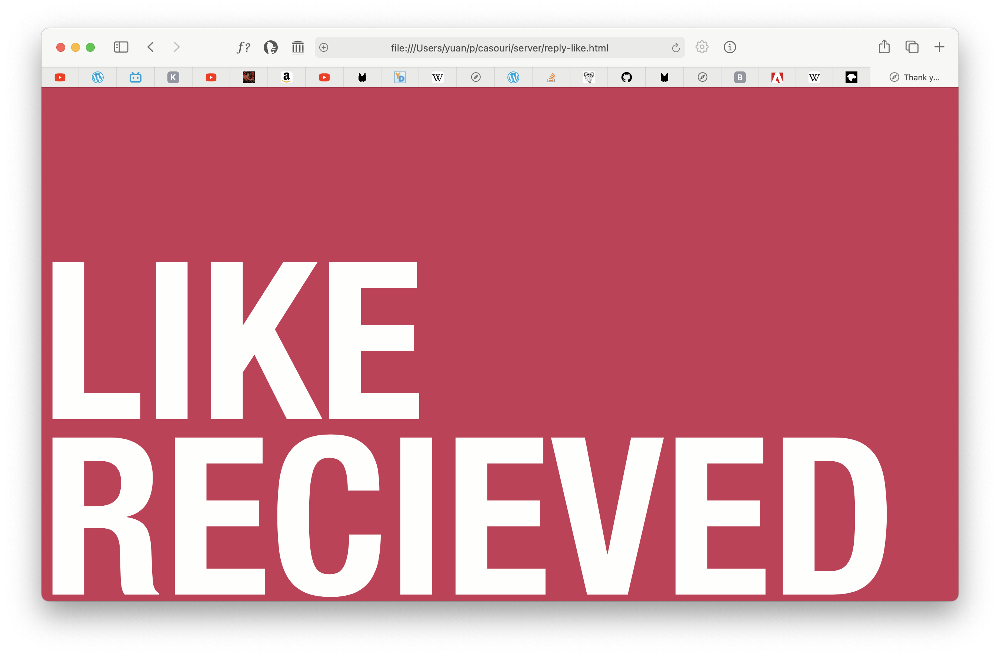

Adding a Like Button to My Static Blog
Many times when I read other’s blogs, I wish I can “like” their post to express my appreciation. Of course, most posts don’t, and the ones that do often requires login for liking the post. Since I also want to know if anyone likes my posts (or rather “is anyone reading them?”), I decided to add like buttons to my posts, ones that don’t require login.
The idea is simple: add a button that makes a POST request to my
server. For example, this button makes a POST request to
/like with PATH =
/note/2021/disappearing-image/index.html:
<form action="/like" method="post"> <input type="text" name="path" hidden="" value="/note/2021/disappearing-image/index.html"> <button class="like" type="submit">❤ Like</button> </form>
My server then records this like to my database, and I can query how many likes I received:
sqlite3 database.sqlite3 -box "select uri, count(*) as c \ from like \ group by uri order by c;" ┌─────────────────────────────┬───┐ │ uri │ c │ ├─────────────────────────────┼───┤ │ /rock/day/day-56/index.html │ 3 │ └─────────────────────────────┴───┘
For the confirmation screen, I had a few options:

Figure 1: Helvetica Neue Ultra Condensed

Figure 2: Helvetica Neue Ultra Condensed, white on black

Figure 3: Mechanically condensed Helvetica, white on black

Figure 4: Helvetica Ultra Condensed, white on pink
I first came up with figure 1. Then I wanted to give the reader a surprise, so I inverted the background to increase contrast in figure 2. Then I thought about using mechanically condensed font instead of normal condense to further increase contrast and tension in figure 3. Comparing figure 2 and 3, you can clearly feel the unnaturalness and discomfort of mechanically condensed fonts. No wonder EVA used it. But then I thought I just want to surprise the reader, not to make them uncomfortable, so I didn’t use figure 3 in the end.
But hey, like should be positive and warm and happy, what’s with the solemn black & white? My blog is already kinda boring with so less color. So I ended up changing the background to a warm pink.